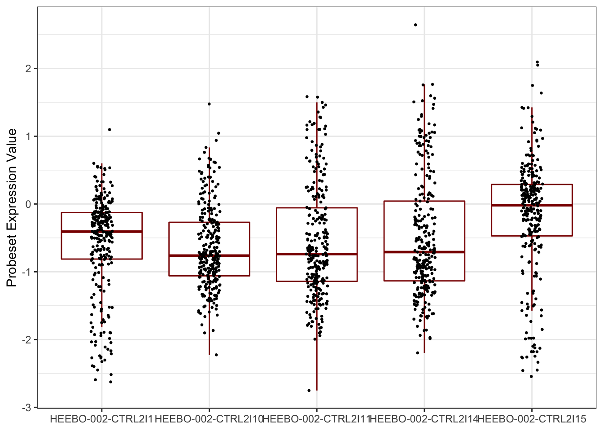

Bölüm 5 Veri on isleme basamaklari
Veriyi GEO’dan ifade matrisi, metadata yani bireylere dair bilginin bulundugu bir tablo, ve feature data yani probeset-gen eslesmelerinin verildigi bir tablo olarak kaydettim. Simdi bunlari okuyarak baslayacagiz. Ilk olarak gen ifade verisiyle baslayalim.
5.1 read.csv() ve readRDS() ile veri okuma
read.csv fonksiyonu hem URL’den okuma hem de bilgisayarimizdaki bir dosyadan okuma yapmamizi saglar. Dosyayi github repomdan indirip, fonksiyona file = degiskeni olarak bilgisayarinizda indirdiginiz yeri vererek okuyabilirsiniz. Simdi kolaylik olmasi acisindan direkt olarak github repomdan okuyacagiz. Bu fonksiyon ayrica baska argumanlar da aliyor. header dosyada sutun isimlerinin yer alip almadigini belirtmek icin kullaniliyor ve mantiksal bir arguman yani TRUE ya da FALSE degerlerini alabilir. Kullanacagimiz bir diger arguman ise row.names =, bu da satir isimlerinin hangi sutunda yer aldigini belirtmemiz icin gerekli. Eger bu argumani kullanmazsak, matrisimizin satir isimleri de bir sutun olarak okunacaktir.
expr = read.csv(file = 'https://github.com/mdonertas/20210322_REgitim/raw/master/data/expressionmatrix.csv',
header = T,
row.names = 1)Ilk 6 satir ve 4 sutuna bakalim:
expr[1:6,1:4]## GSM749899 GSM749900 GSM749901 GSM749902
## HEEBO-002-CTRL2I1 -1.455124 -2.6244200 -1.904436 -1.5793507
## HEEBO-002-CTRL2I10 1.044670 0.4490985 0.619243 0.1930628
## HEEBO-002-CTRL2I11 1.164344 1.5833201 1.150024 1.5764080
## HEEBO-002-CTRL2I14 1.597227 1.4105770 1.469449 2.6433802
## HEEBO-002-CTRL2I15 -1.454337 -1.9784923 -1.485409 -1.5038039
## HEEBO-002-CTRL2I16 1.396667 0.7461117 1.212514 0.6586667Her sey yolunda gozukuyor ama bir de bu objenin daha onceden ogrendigimiz gibi classina bakalim:
class(expr)## [1] "data.frame"Genellikle read.csv fonksiyonu bir data.frame olusturur. Biz bu objede kimi matris operasyonlari yapmak istiyoruz ve verimiz de sadece numerik degerlerden olusuyor. O yuzden bunu matrise donusturebiliriz. Bunun icin as.matrix yani ‘matrix olarak’ fonksiyonunu kullanabiliriz.
expr = as.matrix(expr)Tekrar ilk birkac satir sutun ve class kontrolumuzu yapalim:
expr[1:6, 1:4]## GSM749899 GSM749900 GSM749901 GSM749902
## HEEBO-002-CTRL2I1 -1.455124 -2.6244200 -1.904436 -1.5793507
## HEEBO-002-CTRL2I10 1.044670 0.4490985 0.619243 0.1930628
## HEEBO-002-CTRL2I11 1.164344 1.5833201 1.150024 1.5764080
## HEEBO-002-CTRL2I14 1.597227 1.4105770 1.469449 2.6433802
## HEEBO-002-CTRL2I15 -1.454337 -1.9784923 -1.485409 -1.5038039
## HEEBO-002-CTRL2I16 1.396667 0.7461117 1.212514 0.6586667class(expr)## [1] "matrix" "array"Arraylerden baslangicta bahsetmemistim, kullanimi cok asiri yaygin degil ama bunlar da 1 ya da daha fazla boyutlu vektorler olarak dusunulebilir, yani iki boyutlusu matris ama daha fazla boyutlu array olusturmak mumkun.
Simdi bir de matrisimizin boyutlarina bakalim. Bunu ya satir (nrow()) ve sutun sayisini (ncol()) yazdirarak ya da dim() fonksiyonu ile yapabiliriz.
nrow(expr)## [1] 30176ncol(expr)## [1] 269dim(expr)## [1] 30176 269Matrisimizde 30176 satir, 269 sutun var - yani 30176 probeset ID, 269 ornek. Daha fazla ilerlemeden once bir veri okuma sekli daha gostermek istiyorum.
Alternatif olarak ayni veriyi bir .rds - R objesi olarak da kaydetmistim. Onu okumak icin de readRDS() fonksiyonunu kullanabiliriz. Bunun avantaji verinizin bir csv dosyasina kaydedilerek olasi bozulmalarini engellemenin yani sira, obje turunu vs. de koruyabilirsiniz.
expr = readRDS(file = './data/expressionmatrix.rds')
class(expr)## [1] "matrix" "array"expr[1:6,1:4]## GSM749899 GSM749900 GSM749901 GSM749902
## HEEBO-002-CTRL2I1 -1.455124 -2.6244200 -1.904436 -1.5793507
## HEEBO-002-CTRL2I10 1.044670 0.4490985 0.619243 0.1930628
## HEEBO-002-CTRL2I11 1.164344 1.5833201 1.150024 1.5764080
## HEEBO-002-CTRL2I14 1.597227 1.4105770 1.469449 2.6433802
## HEEBO-002-CTRL2I15 -1.454337 -1.9784923 -1.485409 -1.5038039
## HEEBO-002-CTRL2I16 1.396667 0.7461117 1.212514 0.6586667dim(expr)## [1] 30176 269Gordugunuz gibi bu dosyayi okudugumuzda veriyi direkt olarak matrix olarak okuyabildik ve data.frame’den donusturmek zorunda kalmadik.
5.2 Kesifci veri analizi
Daha ileri gecmeden hemen bu asamada cok kisaca verimiz neye benziyor bakabiliriz. Bunun icin temel bir kac gorsellestirme fonksiyonu kullanacagiz.
5.2.1 Histogram
Ilk olarak verimizin dagilimi nedir, ne gibi degerler var bunlara bakalim. Bunun icin histogram kullanabiliriz, ve ilk olarak temel Rda histogram cizmeyi gorelim.
hist(expr)Bu sekilde, hangi bireyin veya genin verisi olduguna bakmaksizin tum degerlerin bir histogramini aliriz. Bu histogram cogu gen ekpresyon verisinde alacaginiz ham veri grafiginden cok farkli, bunun sebebi bunun two channel microarray olmasi ve loess normalizasyonu gibi kimi normalizasyon asamalarindan da gecirilmis olmasi.
Buna bakmak oldukca kolaydi, ama ben genel olarak ggplot2 paketinin gorsellestirmelerini kullaniyorum ve herkese en bastan itibaren ggplot ogrenmesini tavsiye ediyorum. Basit grafiklerde biraz zahmetli gelse de kompleks yayina hazir figur olusturmak icin cok ciddi kolaylik sagliyor. ggplot2 data.frame objesiyle calisir, oysa bu bir matris. Bu yuzden ufak bir degisiklik yapmamiz lazim:
library(ggplot2)
mydat = reshape2::melt(expr)
ggplot(mydat, aes(x = value)) +
geom_histogram()## `stat_bin()` using `bins = 30`. Pick better value with `binwidth`.ggplot(mydat, aes(x = value)) +
geom_histogram(color = 'gray60', bins = 50) +
xlab('Probeset Expression') +
ylab('Count') +
theme_bw()5.2.2 Boxplot
Simdi de ilk birkac bireyin gen anlatim profillerine bakalim. Ilk once base R gorsellestirme fonksiyonu ile:
boxplot(expr[,1:5])Ayni grafigi ilk bir kac gen icin cizmek isteyecek olsak, hem matrisi subset etmemiz hem de transpoze etmemiz gerekir. Bunu t() fonksiyonu ile kolaylikla yapabiliriz:
boxplot(t(expr[1:10,]))Aynisini ggplot ile yapalim:
mydat = reshape2::melt(expr[,1:5])
head(mydat)## Var1 Var2 value
## 1 HEEBO-002-CTRL2I1 GSM749899 -1.455124
## 2 HEEBO-002-CTRL2I10 GSM749899 1.044670
## 3 HEEBO-002-CTRL2I11 GSM749899 1.164344
## 4 HEEBO-002-CTRL2I14 GSM749899 1.597227
## 5 HEEBO-002-CTRL2I15 GSM749899 -1.454337
## 6 HEEBO-002-CTRL2I16 GSM749899 1.396667ggplot(mydat,aes(x = Var2, y = value)) +
geom_boxplot(outlier.size = 0.01, outlier.color = 'gray', color = 'darkred') +
theme_bw() +
xlab(NULL) + ylab('Probeset Expression Value')mydat = reshape2::melt(expr[1:5,])
head(mydat)## Var1 Var2 value
## 1 HEEBO-002-CTRL2I1 GSM749899 -1.455124
## 2 HEEBO-002-CTRL2I10 GSM749899 1.044670
## 3 HEEBO-002-CTRL2I11 GSM749899 1.164344
## 4 HEEBO-002-CTRL2I14 GSM749899 1.597227
## 5 HEEBO-002-CTRL2I15 GSM749899 -1.454337
## 6 HEEBO-002-CTRL2I1 GSM749900 -2.624420ggplot(mydat,aes(x = Var1, y = value)) +
geom_boxplot(outlier.shape=NA, color = 'darkred') +
geom_jitter(size = 0.5, width = 0.1) +
theme_bw() +
xlab(NULL) + ylab('Probeset Expression Value')
5.3 ProbesetID - Gen eslestirmesi
Ayni gen ifade verisi gibi probesetID - gen eslesmesi bilgisinin kayitli oldugu bir tablo daha kaydetmistim. Simdi onu okuyalim:
genedata = read.csv('https://github.com/mdonertas/20210322_REgitim/raw/master/data/featuredat.csv')
genedata[1:3,]## X ID OligoID
## 1 HEEBO-002-CTRL2I1 HEEBO-002-CTRL2I1 hCT000577
## 2 HEEBO-002-CTRL2I10 HEEBO-002-CTRL2I10 hCT000586
## 3 HEEBO-002-CTRL2I11 HEEBO-002-CTRL2I11 hCT000587
## SEQUENCE
## 1 ACTCTGGATCCTGGGCGACGTCTTCATCGGCCGCTACTACACTGTGTTTGACCGTGACAACAACAGGGTG
## 2 CATCCTCACCGACATCACCAAGGGTGTGCAGTACCTCAACGAGATCAAGGACAGTGTGGTGGCCGGCTTC
## 3 GTCCCTGGAACGCCAGATGCGTGAAATGGAAGAGAACTTTGCCGTTGAAGCTGCTAACTACCAAGACACT
## GB_ACC Strand Gene_Symbol Gene_Title
## 1 NM_001909.4 + CTSD cathepsin D
## 2 NM_001961.3 + EEF2 eukaryotic translation elongation factor 2
## 3 NM_003380.3 + VIM vimentin
## Entrez_Gene_ID UniGene_Cluster_ID Feb2012_Blast_Cutoffs SPOT_ID
## 1 1509 Hs.654447 100/100_Unique_RefSeq
## 2 1938 Hs.515070 100/100_Unique_RefSeq
## 3 7431 Hs.455493 100/100_Unique_RefSeqclass(genedata)## [1] "data.frame"Ilk olarak gen bilgisini duzenleyelim. Bunun icin bu data.frame’den iki sutunu kullanacagiz.
genedata$ID[1:10]## [1] "HEEBO-002-CTRL2I1" "HEEBO-002-CTRL2I10" "HEEBO-002-CTRL2I11"
## [4] "HEEBO-002-CTRL2I14" "HEEBO-002-CTRL2I15" "HEEBO-002-CTRL2I16"
## [7] "HEEBO-002-CTRL2I17" "HEEBO-002-CTRL2I18" "HEEBO-002-CTRL2I19"
## [10] "HEEBO-002-CTRL2I2"genedata$Gene_Symbol[1:10]## [1] "CTSD" "EEF2" "VIM" "VIM" "GSN" "EEF2" "VIM" "CTSD" "RPN2" "RPN2"Simdi isimlendirilmis bir vektor olusturacagim ki, belli bir probe IDye karsilik gelen geni bulabileyim. Bunu yapmak icin setNames() fonksiyonunu kullanacagim. Isimler, yani ikinci arguman, probeID olacak, vektorun kendisi ise genler, bu sayede vektoru belli bir probe ID kullanarak subset ettigimde hangi gen oldugunu bulabilirim. Buna gecmeden bir ornek:
x = setNames(c(1:3),c('bir','iki','uc'))
x## bir iki uc
## 1 2 3ikinci elemani almak icin:
x[2]## iki
## 2x['iki']## iki
## 2Bunlarin ikisini de kullanabiliyorum. IDleri kullanarak genleri bulmam da ayni sekilde olacak:
genemap = setNames(genedata$Gene_Symbol,genedata$ID)
genemap[1:5]## HEEBO-002-CTRL2I1 HEEBO-002-CTRL2I10 HEEBO-002-CTRL2I11 HEEBO-002-CTRL2I14
## "CTSD" "EEF2" "VIM" "VIM"
## HEEBO-002-CTRL2I15
## "GSN"head(genemap)## HEEBO-002-CTRL2I1 HEEBO-002-CTRL2I10 HEEBO-002-CTRL2I11 HEEBO-002-CTRL2I14
## "CTSD" "EEF2" "VIM" "VIM"
## HEEBO-002-CTRL2I15 HEEBO-002-CTRL2I16
## "GSN" "EEF2"Matrisin satir isimleriyle genemap’i subset ettigimiz zaman, dogru sirayla hangi genlere karsilik geliyorsa bize bu bilgiyi verecek. Simdi once bir yanlis yapma ihtimalimize karsin matrisimizi kopyalayalim:
expr_yedek = exprSimdi ilk olarak bir probeset ID birden fazla genle eslesiyor mu buna bakmaliyiz, bunlar veri duplikasyonu yaratacagindan istatistiksel test yapmamizi zorlastirir bunlari veriden cikararak baslayacagiz:
any(duplicated(names(genemap)))## [1] FALSEHic tekrar eden bir probesetIDmiz yok - yani bu bu veriseti icin problem degil. Bir de cok fazla sayida probesetIDye map olmus olan genlere bakalim:
sort(table(genemap),dec=T)[1:10]## genemap
## ##noname## LRP1 OCRL TLN1 TTN CDH23
## 903 825 88 62 55 55 41
## ANXA7 RB1 DNAH9
## 40 40 37Bunlardan '##noname## ve '' tabii ki gen ismi degil. Bunlari veriden cikartmak gerekir, ama bunu matrixe isimleri gecirdikten sonra yapacagim. Simdi probeset IDleri gen isimleriyle degistirerek devam edelim:
rownames(expr) = genemap[rownames(expr)]expr[1:5,1:5]## GSM749899 GSM749900 GSM749901 GSM749902 GSM749903
## CTSD -1.455124 -2.6244200 -1.904436 -1.5793507 -2.1666262
## EEF2 1.044670 0.4490985 0.619243 0.1930628 -0.4370544
## VIM 1.164344 1.5833201 1.150024 1.5764080 1.3569308
## VIM 1.597227 1.4105770 1.469449 2.6433802 1.7567335
## GSN -1.454337 -1.9784923 -1.485409 -1.5038039 -1.2828650sort(table(rownames(expr)), dec = T)[1:10]##
## ##noname## LRP1 OCRL TLN1 TTN CDH23
## 903 825 88 62 55 55 41
## ANXA7 RB1 DNAH9
## 40 40 37Burada gordugunuz gibi bazi gen isimleri birden fazla kez tekrar ediliyor. Bu mikrodizin dizaynindan kaynakli bir durum, her gen bir ya da daha fazla probeset ile temsil ediliyor. Genelde her gen bu probesetlerin ortalamasi ya da maksimumu alinarak ozetlenir - bu sayede her gen matriste bir defa yer alir. Bunu yapmak icin matrisi gen isimleriyle subset etmeyi ogrenecegiz. Zaten belli bir isimle subset yapmayi biliyoruz, ancak bu sadece tekrarli olmayan durumlarda gecerli. Suna bakalim:
x = setNames(c(1:5), c('bir','iki','iki','dort','bes'))
x['iki']## iki
## 2oysa 3 degerine sahip olan elemanin adi da ‘iki.’ Bu tarz tekrarli durumlarda otomatik olarak ilk eleman verilir. Ikisini birden istiyorsak subset islemini %in% operatoru ile yapmamiz gerekir.
5.3.1 %in% operatoru
'elma' %in% c('elma','armut')## [1] TRUE'muz' %in% c('elma','armut')## [1] FALSEc('elma', 'muz') %in% 'elma'## [1] TRUE FALSEc('elma', 'muz') %in% 'muz'## [1] FALSE TRUEBilmemiz gereken bir konu da bir vektoru ya da matrisi mantiksal degiskenlerle de subset edebildigimiz:
c(1:5)[c(T,T,F,T,F)]## [1] 1 2 4Ilk olarak gen ismi olarak '##noname## ve '' gorunen satirlari veriden cikartarak baslamaliyiz:
expr = expr[!rownames(expr) %in% c('##noname##',''),]sort(table(rownames(expr)),dec=T)[1:10]##
## LRP1 OCRL TLN1 TTN CDH23 ANXA7 RB1 DNAH9 WDFY3 SYNE2
## 88 62 55 55 41 40 40 37 37 36Simdi tekrar eden genleri ozetlemeye geri donelim.
expr[rownames(expr) %in% 'VIM', 1:5]## GSM749899 GSM749900 GSM749901 GSM749902 GSM749903
## VIM 1.164344 1.583320 1.150024 1.576408 1.356931
## VIM 1.597227 1.410577 1.469449 2.643380 1.756734
## VIM 2.475041 2.236114 2.179526 2.807048 2.443889
## VIM 2.414010 2.242931 2.379348 1.909755 2.596801
## VIM 2.913906 1.343048 2.536056 2.271887 2.118884
## VIM 1.743049 1.492585 1.621053 1.394594 2.030154
## VIM 1.171174 1.165681 1.099818 2.274270 1.541334
## VIM 1.446696 1.451936 1.782307 2.605349 1.957581
## VIM 1.131674 1.172329 1.053107 1.871871 1.780982Simdi yeni bir fonksiyon ogrenelim colMeans() bu da adi ustunde sutun ortalamasini aliyor. Yani matrisi tum VIM genine karsilik gelen probesetler icin subset edip, colMeans() dersek tek boyutlu, satirlarin ortalamasina sahip bir vektor verecek:
vimmeans = colMeans(expr[rownames(expr) %in% 'VIM', ])
head(vimmeans)## GSM749899 GSM749900 GSM749901 GSM749902 GSM749903 GSM749904
## 1.784125 1.566502 1.696743 2.150507 1.953699 1.409357Ama bu sadece tek bir gen icin. Oysa biz tek genle ilgilenmiyoruz, butun genler icin bunu yapmak istiyoruz. Eger programlama dillerine asinaysaniz for loop larini duymussunuzdur. Bunlar ayni islemin defalarca ayni ya da farkli inputlar icin tekrarlanmasini saglar. R’da da for loop yazabiliriz bunun icin kullanilacak fonksiyon for. Bizse for yerine R’a ozgu *apply fonksiyonlari olarak gecen fonksiyonlardan biri olan sapply() fonksiyonu ile bunu yapacagiz. Ilk olarak butun gen isimlerini almaliyiz. Bunu sadece rownames() ile alamiyoruz cunku isimler tekrar ediyor. Onun yerine her degerin sadece bir kere tekrar edilmesini unique() fonksiyonu ile saglayacagiz.
genisimleri = unique(rownames(expr))
nrow(expr)## [1] 28448length(genisimleri)## [1] 17160Sadece 17bin gen var. Yani her gen cok defa tekrar ediliyor olmak zorunda degil. Eger tekrar edilmeyen bir geni subset edersek, ‘sutun ortalamalarini ver’ demek icin kullanacagimiz colMeans fonksiyonu calismaz, cunku bir matris degil bir vektor soz konusu olacak. Bunun icin bir de if fonksiyonunu ogrenmeliyiz. if bir kodu ancak belli kosullar altinda calistiracaktir. Bu sayede eger bir defa geciyorsa sunu yap, birden fazla kez tekrar ediliyorsa sunu yap seklinde bir kod yazmamiz mumkun olacak. If’e cok kisa bir ornek:
vektorum = c('elma','muz','armut')
if('cilek'%in%vektorum){
print('cilek var!')
} else if('elma' %in% vektorum){
print('elma var!')
} else{
print('ne cilek ne elma var :(')
}## [1] "elma var!"daha iyi anlayabilmemiz icin bir ornek daha:
vektorum = c('elma','muz','armut')
if('muz'%in%vektorum){
print('muz var!')
} else if('elma' %in% vektorum){
print('elma var!')
} else{
print('ne cilek ne elma var :(')
}## [1] "muz var!"hem elma hem muz olmasina ragmen sadece birinci komut calisti. Bunun sebebi else komutu ancak ilk kodumuz yanlissa calisacak olmasi.
Simdi de cok kisa sapply() nasil calisiyor buna bakalim:
sapply(c(1:10),function(i){
i * 2
})## [1] 2 4 6 8 10 12 14 16 18 20sapply(c(1:10),function(i){
i * (i-1)
})## [1] 0 2 6 12 20 30 42 56 72 90Simdi biraz ileri duzey gibi gorunmesi muhtemel bir kod yazacagiz ama basamak basamak inceleyince anlasilmasi kolay olacaktir:
genexpr = sapply(genisimleri, function(gen) {
i = rownames(expr)%in%gen
if(sum(i)>1){
colMeans(expr[i,])
} else if(sum(i)==1){
expr[i,]
}
})genexpr[1:5,1:5]## CTSD EEF2 VIM GSN RPN2
## GSM749899 -0.8124619 1.5620237 1.784125 -0.6578933 1.658038
## GSM749900 -1.3310489 1.4339156 1.566502 -1.1007844 1.528385
## GSM749901 -1.2447029 0.9832866 1.696743 -1.0306526 1.286318
## GSM749902 -1.2017866 0.7393814 2.150507 -0.8413292 1.153392
## GSM749903 -1.1041998 0.2957918 1.953699 -0.7242716 0.789019satir-sutun yer degistirmis durumda. bunu yine transpoze ederek duzeltebiliriz:
genexpr = t(genexpr)genexpr[1:5,1:5]## GSM749899 GSM749900 GSM749901 GSM749902 GSM749903
## CTSD -0.8124619 -1.331049 -1.2447029 -1.2017866 -1.1041998
## EEF2 1.5620237 1.433916 0.9832866 0.7393814 0.2957918
## VIM 1.7841245 1.566502 1.6967431 2.1505070 1.9536987
## GSN -0.6578933 -1.100784 -1.0306526 -0.8413292 -0.7242716
## RPN2 1.6580375 1.528385 1.2863177 1.1533917 0.7890190dim(genexpr)## [1] 17160 269Artik her gen icin bir satirimiz var!
5.4 Quantile Normalization
Son olarak bu gen ifade matrixinde bir normalizasyon metodu uygulayalim. Burada amacimiz farkli ornekler arasindaki olasi teknik varyasyonu ortadan kaldirmak. Uygulayacagimiz normalizasyonun adi ‘quantile normalization’ - bunun sonunda tum orneklerin dagilimlari ayni olacak - genler farkli degerler alacak ama genlerin dagilimi ayni olacak. Normalizasyon oncesi ilk bir kac bireyin dagilimina bakalim.
boxplot(genexpr[,1:20]) Gordugunuz gibi ortalamalari hemen hemen ayni olsa da (bunun sebebi verinin zaten baska bir yontemle kismen normalize edilmis olmasi), Dagilimlar farkli.
Gordugunuz gibi ortalamalari hemen hemen ayni olsa da (bunun sebebi verinin zaten baska bir yontemle kismen normalize edilmis olmasi), Dagilimlar farkli.
Normalizasyon icin Rda olmayan bir fonksiyon kullanacagiz, bunun icin de preprocessCore paketini yuklememiz gerekiyor:
BiocManager::install("preprocessCore")library(preprocessCore)Fonksiyonumuzun adi normalize.quantiles()
genexpr_qn = normalize.quantiles(genexpr)
dim(genexpr_qn)## [1] 17160 269genexpr_qn[1:5,1:5]## [,1] [,2] [,3] [,4] [,5]
## [1,] -0.4993920 -0.6776740 -0.7796459 -0.8040486 -0.8587960
## [2,] 1.0141904 0.8355595 0.6704056 0.5563232 0.2924776
## [3,] 1.1413791 0.9140343 1.1026208 1.4685350 1.5103426
## [4,] -0.4112961 -0.5602207 -0.6620208 -0.5704519 -0.6015157
## [5,] 1.0659865 0.8908564 0.8555507 0.8361596 0.6749602Gordugunuz gibi bu fonksiyon ne yazik ki satir sutun isimlerimizi sildi. Ama bunlarin ilk matrisimizle ayni oldugunu biliyoruz cunku bir subset islemi yapmadik. Eski satir-sutun isimlerimizi yeni matrisimize aktaralim:
dimnames(genexpr_qn) = dimnames(genexpr)
genexpr_qn[1:5,1:5]## GSM749899 GSM749900 GSM749901 GSM749902 GSM749903
## CTSD -0.4993920 -0.6776740 -0.7796459 -0.8040486 -0.8587960
## EEF2 1.0141904 0.8355595 0.6704056 0.5563232 0.2924776
## VIM 1.1413791 0.9140343 1.1026208 1.4685350 1.5103426
## GSN -0.4112961 -0.5602207 -0.6620208 -0.5704519 -0.6015157
## RPN2 1.0659865 0.8908564 0.8555507 0.8361596 0.6749602Tekrar dagilimlara bakacak olursak:
boxplot(genexpr_qn[,1:20])Gordugunuz gibi dagilimlar birebir esit oldu. Bundan sonraki asamalarda bu veriyi kullanacagiz.
5.5 Ornek bilgisini duzenleme
Son olarak, bir de orneklerle ilgili bilgilerin yer aldigi (yas, biyolojik cinsiyet) bir tablomuz var. Ama bu verinin de duzenlenmesi gerekiyor.
metadata = read.csv('https://github.com/mdonertas/20210322_REgitim/raw/master/data/metadata.csv')
head(metadata)## X title geo_accession characteristics_ch1 characteristics_ch1.1
## 1 GSM749899 HB_18_34 GSM749899 array batch: 10 age: -0.498630137
## 2 GSM749900 HB_22_35 GSM749900 array batch: 18 age: -0.498630137
## 3 GSM749901 HB_16_29 GSM749901 array batch: 1 age: -0.498630137
## 4 GSM749902 HB_17_91 GSM749902 array batch: 8 age: -0.498630137
## 5 GSM749903 HB_18_16 GSM749903 array batch: 9 age: -0.479452055
## 6 GSM749904 HB_16_62 GSM749904 array batch: 3 age: -0.479452055
## characteristics_ch1.2 characteristics_ch1.3 characteristics_ch1.4
## 1 Sex: F race: AA postmortem interval (pmi): 3
## 2 Sex: F race: AA postmortem interval (pmi): 1
## 3 Sex: M race: AA postmortem interval (pmi): 1
## 4 Sex: M race: AA postmortem interval (pmi): 4
## 5 Sex: M race: AA postmortem interval (pmi): 2
## 6 Sex: M race: AA postmortem interval (pmi): 4
## characteristics_ch1.5 characteristics_ch1.6 characteristics_ch1.7
## 1 ph: NULL rna integrity number (rin): 9.7 smoke at death: No
## 2 ph: 6.21 rna integrity number (rin): 9.8 smoke at death: No
## 3 ph: NULL rna integrity number (rin): 9.6 smoke at death: No
## 4 ph: NULL rna integrity number (rin): 9.8 smoke at death: No
## 5 ph: NULL rna integrity number (rin): 9 smoke at death: Unknown
## 6 ph: NULL rna integrity number (rin): 9.8 smoke at death: NoBu veriyi kullanarak, ayni probeset-gen eslestirmesi icin yaptigimiz gibi yas ve biyolojik cinsiyet icin birey bilgisi vektoru olusturalim:
yas = setNames(metadata$characteristics_ch1.1, metadata$geo_accession)
head(yas)## GSM749899 GSM749900 GSM749901 GSM749902
## "age: -0.498630137" "age: -0.498630137" "age: -0.498630137" "age: -0.498630137"
## GSM749903 GSM749904
## "age: -0.479452055" "age: -0.479452055"class(yas)## [1] "character"cinsiyet = setNames(metadata$characteristics_ch1.2, metadata$geo_accession)
head(cinsiyet)## GSM749899 GSM749900 GSM749901 GSM749902 GSM749903 GSM749904
## "Sex: F" "Sex: F" "Sex: M" "Sex: M" "Sex: M" "Sex: M"class(cinsiyet)## [1] "character"Bu veriler gordugunuz gibi karakter verileri ve formatlari pek iyi degil. Ornegin bu yas verisiyle yapabileceklerimiz sinirli cunku numerik degil. Ilk olarak basta yazan ‘age:’ kismindan kurtulmamiz lazim ki bu yas verisini kullanabilelim. Ayni sekilde biyolojik cinsiyeti de ‘F’ veya ‘M’ haline, hatta daha iyisi ‘kadin’ ve ‘erkek’ haline getirelim.
5.5.1 Yas verisinin duzenlenmesi
Basta yazan ‘age:’ yazisinin ortadan kaldirilmasi icin bir kac secenek var. Bunlardan en basiti gsub fonksiyonu. Bu fonksiyon, bir karakter vektorunde belli karakterlerin degistirilmesini saglar:
gsub('range','','Bioinforange')## [1] "Bioinfo"gsub('range','conference','Bioinforange')## [1] "Bioinfoconference"Bu sekilde ‘age:’ yazisini silebiliriz:
yas = gsub('age: ','',yas)
head(yas)## GSM749899 GSM749900 GSM749901 GSM749902 GSM749903
## "-0.498630137" "-0.498630137" "-0.498630137" "-0.498630137" "-0.479452055"
## GSM749904
## "-0.479452055"Ancak gordugunuz gibi, veri hala karakter. Bunu numerik yapmak icin as.numeric() kullaniriz:
yas = setNames(as.numeric(yas),names(yas))hist(yas)Daha net bir sekilde verinin ozetini gormek istersek summary() fonksiyonunu kullanabiliriz:
summary(yas)## Min. 1st Qu. Median Mean 3rd Qu. Max.
## -0.4986 5.3452 24.2658 27.7920 46.9671 78.2274Dogum oncesi zamandan 78 yasina kadar bireyler var ve ortalamamiz 27.7.
5.5.2 Biyolojik cinsiyet verisinin duzenlenmesi
Bu sefer sadece 2 biyolojik cinsiyet mumkun oldugundan daha farkli bir yol izleyebiliriz. Ama oncelikle, sadece iki secenek oldugundan emin olalim.
unique(cinsiyet)## [1] "Sex: F" "Sex: M" "Sex: 5"Bir de ‘5’ var, bu muhtemelen veri girisinde bir hata demek ama bu bireyi en azindan cinsiyet icin inceleyemeyecegimiz anlamina geliyor. Ilk olarak bu veriye sahip olan bireyi hem bu veriden hem expression verisinden hem de yas verisinden cikaralim.
cikart = names(cinsiyet[(cinsiyet %in% 'Sex: 5')])
cinsiyet = cinsiyet[!names(cinsiyet) %in% cikart]
yas = yas[!names(yas) %in% cikart]
genexpr_qn = genexpr_qn[,!colnames(genexpr_qn) %in% cikart]Ayni probeset-gen eslesmesi yapmak icin kullandigimiz gibi bir vektor olusturalim:
cinsiyetMap = setNames(c('Kadin','Erkek'),c('Sex: F','Sex: M'))
cinsiyet = setNames(cinsiyetMap[cinsiyet],names(cinsiyet))
head(cinsiyet)## GSM749899 GSM749900 GSM749901 GSM749902 GSM749903 GSM749904
## "Kadin" "Kadin" "Erkek" "Erkek" "Erkek" "Erkek"Kac kadin kac erkek bireyin olduguna bakmak icin table() fonksiyonunu kullanabiliriz:
table(cinsiyet)## cinsiyet
## Erkek Kadin
## 177 91